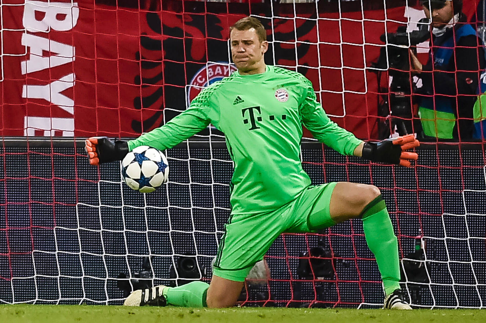

Manuel Neuer
Neuer 1991-ben került az FC Schalke 04 csapatához. Végigjárta az összes korosztályos csapatot, majd 2005-ben profi
szerződést kapott, ami egészen 2012-ig élt. Neuer 2005. október 12-én megkapta a Fritz Walter-érmet kiemelkedő
eredményeiért a pályán és azon kívül. Az első bajnokiját 2006. augusztus 19-én játszotta a Tivoli-ban az Alemannia
Aachen ellen.
A 2006/2007-es szezonban Frank Rost helyett Mirko Slomka őt állította a kapuba. 19 meccset játszott és sok jó
kritikát kapott modern játékáért. A 2006/2007-es szezonban megválasztották a Bundesliga legjobb kapusának.
2008-ban a Porto ellen kiválóan védett a BL negyeddöntőjében, több büntetőt is megfogott a tizenegyes párbajban
ezzel segítve csapatát, hogy a nyolcaddöntőbe jusson.
A 2010/2011-es szezonban Felix Magath kinevezte őt a Schalke csapatkapitányának, miután Heiko Westermann eligazolt a
Hamburger SV-hez. Neuer kiváló teljesítményének köszönhetően a Schalke eljutott a Bajnokok Ligája elődöntőig. A
Schalke ebben az évben megnyerte a Német-kupát, miután a döntőben megverte a MSV Duisburg-ot 5:0-ra. 2011. április
20-án a csapat bejelentette, hogy Neuer nem hosszabbította meg a szerződését a Schalke-val így távozik a csapattól.

Vissza a futballhoz
Szoboszlai